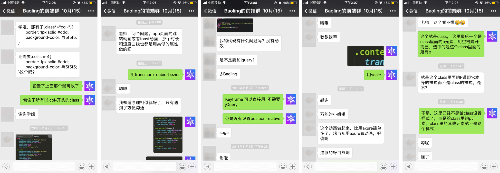

28天学会开发作品集网站
28天后可学会，包括但不限于我的 精简版自适应作品集网站 上的所有功能。包含自适应设计、内容排版、动效等等。
第五周 自由开发与答疑时间（可选，可不打卡）
你将学会：按照自己的思路开发作品集网站，遇到问题可以找我解答。
怎么学
每天提供5min左右的教学视频，学习完后需自己写代码，完成当天的知识点。其中，只要完成当天众多知识点中的一点并截图打卡，即算打卡成功。
授课时间：任何日期都可以开始学习，每个人有自己的学习进度，坚持打卡28节课即可。 每天的打卡视频示例
示例1. 网页基本布局
示例2. 滚动显示隐藏
微信答疑
所有加入打卡的同学都会加入我的答疑群，在线解答同学们关于本课程的任何问题。以下是答疑历史记录。

谁来教
Baoling：目前是美团点评的交互设计师，前eBay全栈设计师。
学费：129元
奖学金：28次课程在28内天完成打卡即可获得60元奖学金。(每天可打卡多关，所以可按自己的时间安排来安排每天学习几节课。)
关于退课：打卡开始4天内退课可全部退款，5-8天内退课可退70元，8天及以上的退课，不退款，但只要坚持在28天内完成课程，即可获60元奖学金。
奖学金：28次课程在28内天完成打卡即可获得60元奖学金。(每天可打卡多关，所以可按自己的时间安排来安排每天学习几节课。)
关于退课：打卡开始4天内退课可全部退款，5-8天内退课可退70元，8天及以上的退课，不退款，但只要坚持在28天内完成课程，即可获60元奖学金。
想完成课程的同学可以加我微信 a-baoling，注明“学习开发网站”。
或直接扫小程序二维码进群学习。


或直接扫小程序二维码进群学习。